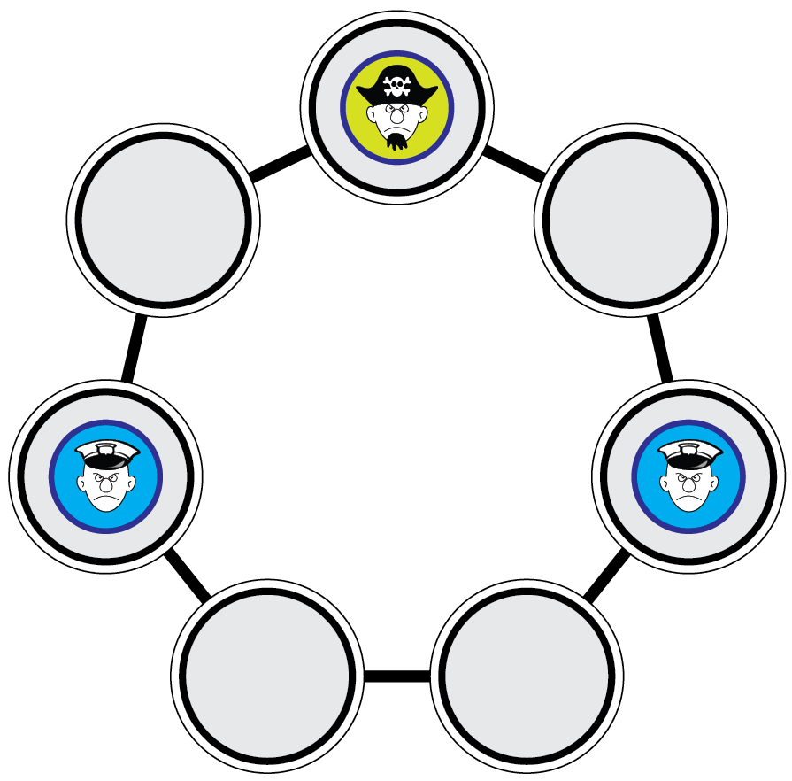

ビ太郎とビバ子は海賊狩りというボードゲームを遊んでいます。下の図がゲームのボードで，警察官と海賊が交互に移動を行います。
まず，警官が移動する順番では，どちらか一人の警官が1つ横のマスに移動します。
次は海賊が移動する順番となり，海賊はジャンプをして2つ横のマスに移動します。
警官は空いているマスにのみ移動でき，海賊やもう一人の警官がいるマスには移動できません。海賊がどちらにジャンプしても警官の上にしか移動できないようなときに海賊は捕まったことになりゲームは終了します。
下の図で，もし海賊が移動する順番であれば，海賊を捕まえたことにゲームに勝ったこととなります。しかし，警官の順番であればどちらかの警官が移動しなければいけないので，ゲームは終了しません。

ビ太郎が海賊となり，捕まらないように完璧にプレイしました。これに対して，警官となったビバ子も完璧にプレイしました。以下のうち，正しいものを選びなさい。
正解は「ビバ子はゲームに勝てない」